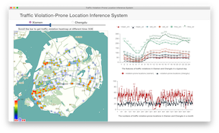
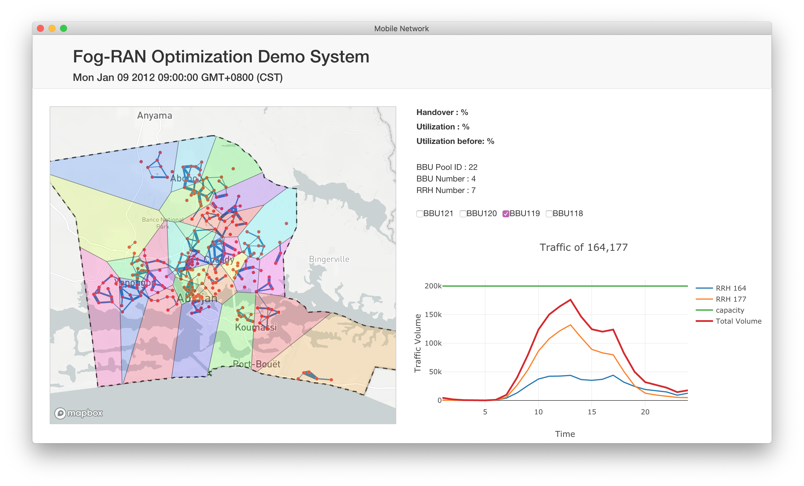
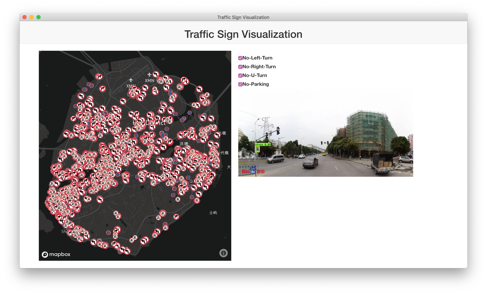
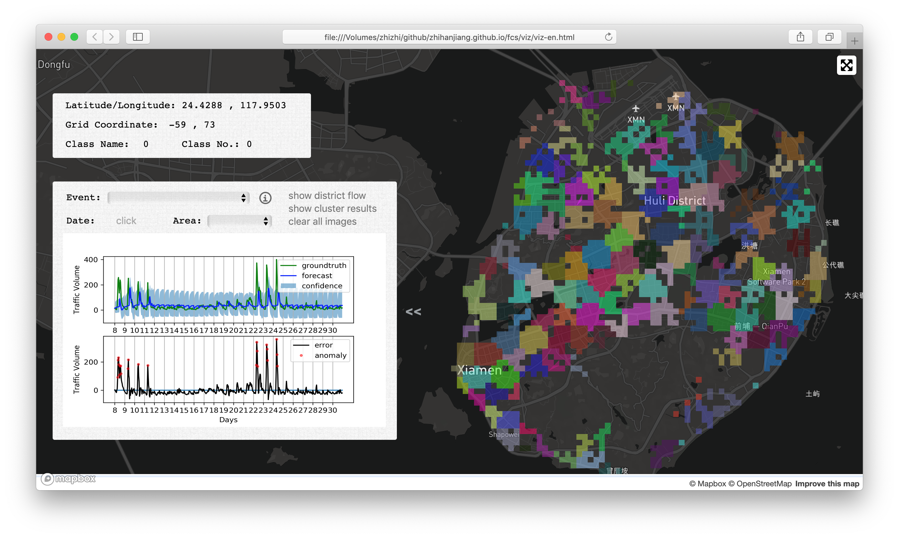

Zhihan Jiang
School of Informatics | Xiamen University
School of Informatics | Xiamen University
Hello, I’m Zhihan Jiang. I'm currently a master student from Fujian Key Laboratory of Sensing and Computing for Smart City at Xiamen University, under the supervision of Prof. Longbiao CHEN. I received the bachelor degree in Computer Science and Technology from Xiamen University in 2018. My research spans a range of different topics, such as inferring traffic violation-prone locations in a city using large-scale vehicle trajectory and road environment data, optimize fog radio access networks using user mobility and traffic data, re-balancing bike stations based on city-wide bike demand prediction, etc.
| 2018——Present | Master | Computer Science and Technology |
| Advisor: Longbiao Chen, Xiamen University | ||
| 2014——2018 | Bachelor | Computer Science and Technology |
| Xiamen University | ||
| Minor | Mathematical Finance | |
| Xiamen University |
| 2019 | Second Prize in the 14th "Challenge Cup" Provincial College Student Technological Innovation Competition |
| 2018 | Outstanding Undergraduate Thesis (Grade A) |
| 2017 | Excellent League Member |
| 2017 | Academic Innovation Scholarship |
| 2016 | First Prize in Fujian Contest District in China Undergraduate Mathematical Contest in Modeling |
| 2015——2018 | Academic Excellence Scholarship (every year) |
| Jan, 2019 | Advanced Computing and System Laboratory | Intern |
| Zhejiang University | ||
| Jul 12—Jul 24, 2018 | Ubiquitous Computing and Big Data Summer School | Short-term Learning |
| Peking University | ||
| Sept, 2019—Jan, 2020 | Software Architecture and Design Patterns | Teaching Assistant |
| Xiamen University | ||
| Sept 14—Sept 16, 2018 | The 14th Joint Conference on Harmonious Human-Machine Environment (HHME2018) | Poster Presentation |
| Tianjin, China |

Inferring Traffic Violation-Prone Locations with Vehicle Trajectory and Road Environment Data.

Optimizing Fog Radio Access Networks for 5G Leveraging User Mobility and Traffic Data.

The visualization platform of four types of traffic signs (no-left-turn, no-right-turn, no-u-turn, no-parking) detected in Xiamen City.

Understanding Urban Structures and Crowd Dynamics Leveraging Large-Scale Vehicle Mobility Data.